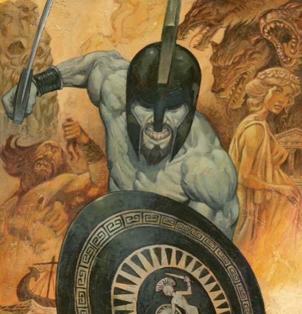

Resumen
Diez años después de la caída de Troya, el victorioso héroe griego Ulises todavía no ha regresado a su Ítaca natal. Una banda de pretendientes alborotados, creyendo que Ulises está muerto, ha invadido su palacio y está cortejando a su fiel pero debilitada esposa, Penélope, mientras disfruta de sus reservas de alimentos. Con el permiso de Zeus, la diosa Atenea, principal aliada inmortal de Ulises, aparece disfrazada e insta al hijo de este, Telémaco, a buscar noticias de su padre en Pilo y Esparta. Los pretendientes, liderados por Antínoo, planean emboscarlo a su regreso.
Mientras Telémaco sigue el rastro de Ulises a través de las historias de sus antiguos compañeros de armas, Atenea organiza la liberación de Ulises de la isla de la bella ninfa Calipso, de quien él ha sido prisionero y amante durante los últimos ocho años. Ulises zarpa en una balsa improvisada, pero Poseidón, dios de los mares, en cuya ira incurrió Ulises anteriormente al cegar a su hijo, el ciclope Polifemo, evoca una tormenta. Con la ayuda de Atenea, Ulises llega a la tierra de los feacios. Su princesa, Nausícaa, enamorada del guapo guerrero, le abre al extraño las puertas del palacio. Ulises mantiene su identidad en secreto tanto como puede, hasta que finalmente, a petición de los feacios, cuenta el relato de sus aventuras.
Ulises relata cómo, después de la guerra de Troya, sus hombres sufrieron más pérdidas a manos de los cícones, y luego casi se vieron tentados a quedarse en la isla de los lotófagos. A continuación, el ciclope Polifemo devoró a muchos de los hombres antes de que un ingenioso plan de Ulises permitiera escapar al resto, pero no antes de que Ulises revelara su nombre a Polifemo, comenzando así su guerra personal con Poseidón. Eolo, dios del viento, entregó luego a Ulises el odre de los vientos para ayudarlo a regresar a su casa, pero sus insensatos compañeros abrieron el odre con avidez, enviando así el barco a la tierra de los Lestrígones, gigantes devoradores de hombres, de donde apenas lograron escapar.
En la siguiente parada, la diosa Circe engañó a los hombres de Ulises y los convirtió en cerdos. Con la ayuda del dios Hermes, Ulises desafió su hechizo y volvió a convertir a los cerdos en hombres. Permanecieron en su isla durante un año, siendo Ulises amante de Circe durante este período, antes de seguir adelante y resistir las tentaciones de las seductoras y peligrosas sirenas, navegar entre los monstruos marinos Escila y Caribdis, y adormecerse en las profundidades del Hades para recibir una profecía del vidente ciego Tiresias. Descansando en la isla de Helios, los hombres de Ulises desobedecieron sus órdenes de no tocar los bueyes. En el mar, Zeus los castigó y todos, excepto Ulises, murieron en una tormenta. Fue entonces cuando Ulises llegó a la isla de Calipso.
Ulises termina su historia, y los feacios le dan regalos y lo llevan a su casa en barco. Atenea disfraza a Ulises de mendigo y le da instrucciones para que busque a su viejo porquerizo, Eumeo. Ella traerá de vuelta a Telémaco de sus propios viajes. Con la ayuda de Atenea, Telémaco evita la emboscada de los pretendientes y se reúne con su padre, quien revela su identidad solo a su hijo y a su porquerizo. Diseña un plan para derrocar a los pretendientes con la ayuda de ellos.
Disfrazado de mendigo, Ulises investiga su palacio. Los pretendientes y algunos de sus viejos sirvientes lo tratan despectivamente al mismo tiempo que Ulises reconoce la lealtad de Penélope y de sus otros sirvientes. Penélope, quien nota el parecido entre el mendigo y su marido, presuntamente muerto, propone un concurso: se casará, finalmente, con aquel pretendiente que pueda disparar una flecha a través de una docena de hachas con el gran arco de Ulises